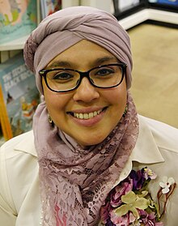

Raúf is of British Bangladeshi heritage. Her work is informed in part by her experiences of racism in childhood. "When I started being called Paki, I started to feel [my difference]. I wondered: why is there no one who looks like me in the books? So I wanted to write those characters,” she said in a 2019 interview with The Guardian. Raúf was raised in London.
Onjali Rauf